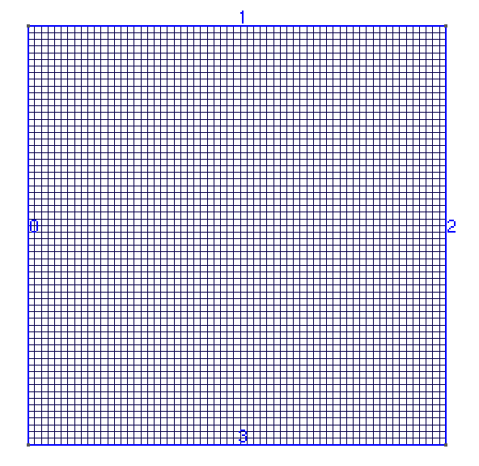
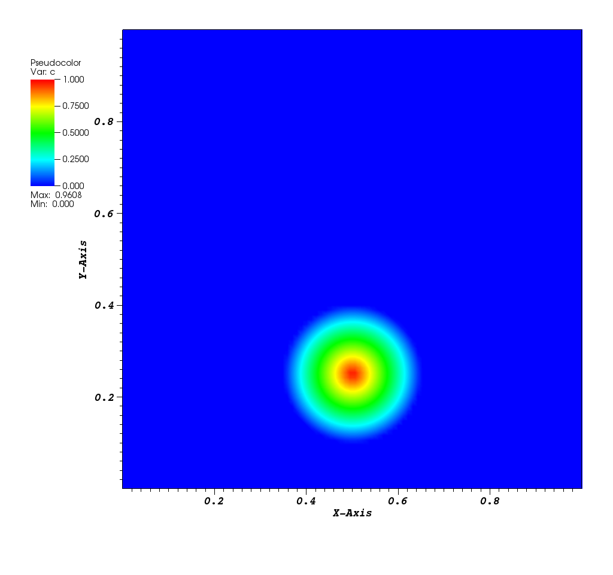
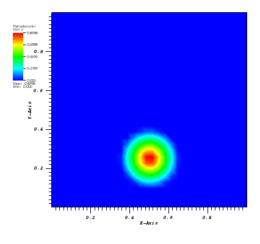
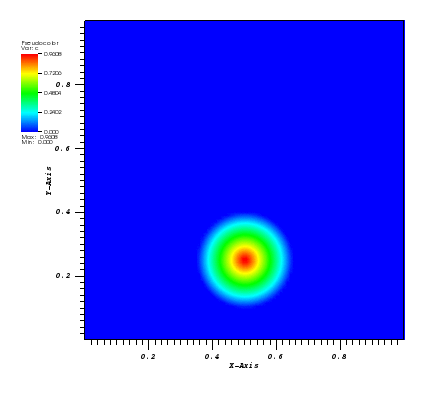
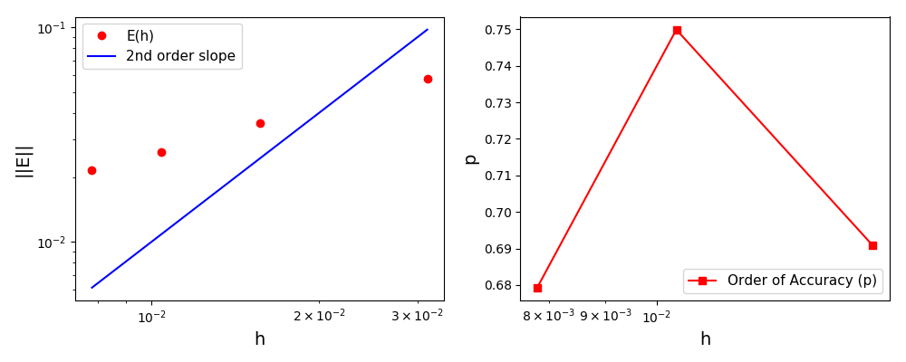
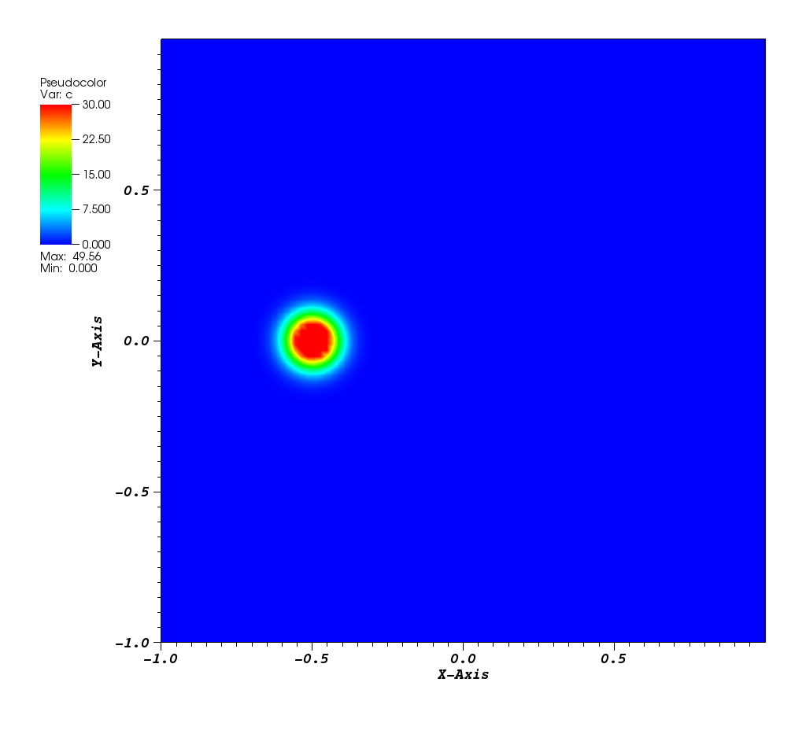
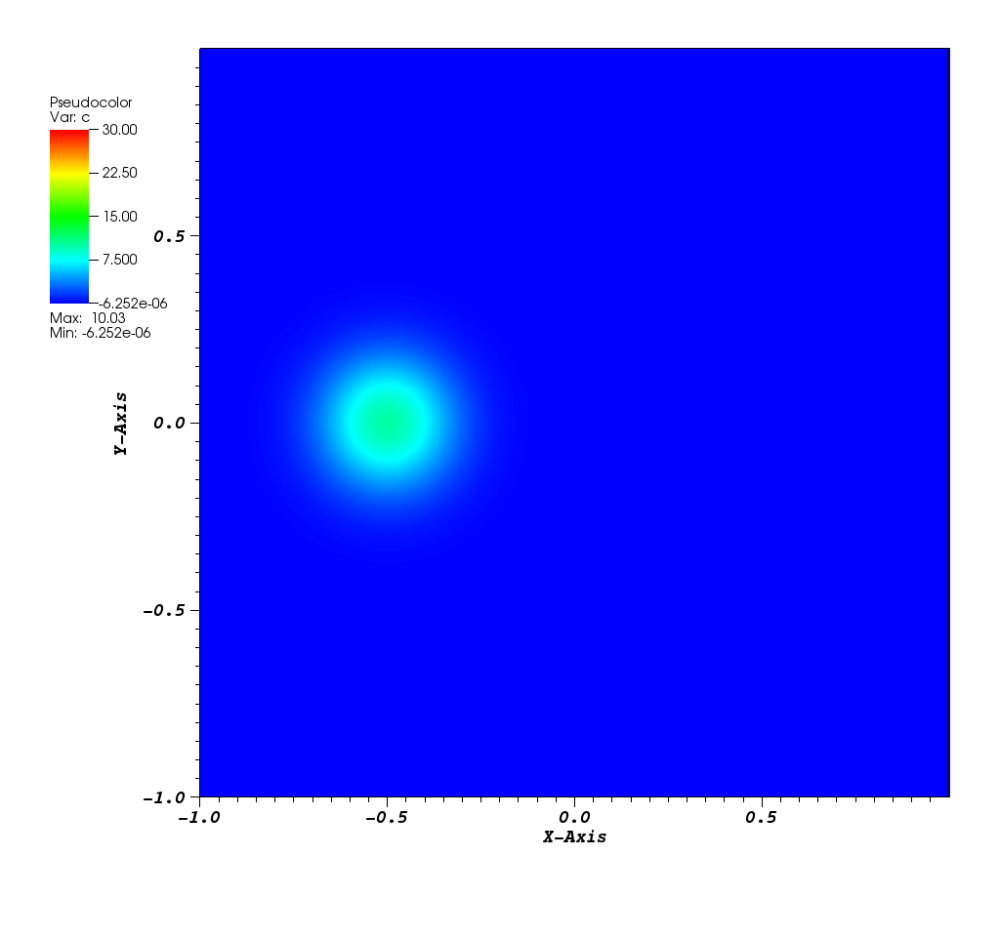
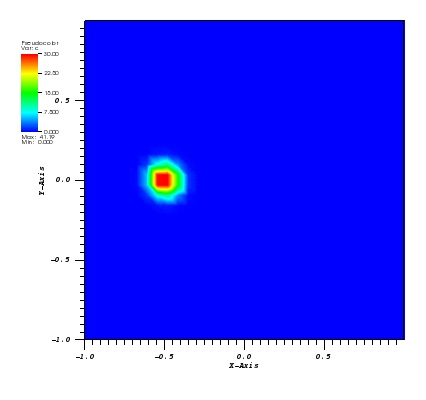
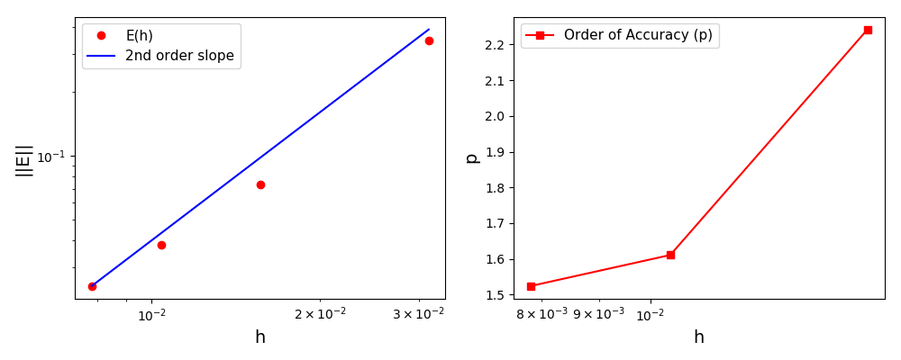

8.3. Code Verification Tests
| Code Verification Test 1 |
Code verification method using the Method of Exact Solutions
(sensitivity analysis; first order differential equations with constant coefficients). |
| Code Verification Test 2 |
Code verification method using the Method of Manufactured Solutions
(1D transient convection-diffusion equation with Dirichlet boundary conditions). |
| Code Verification Test 3 |
Code verification method using the Method of Manufactured Solutions
(1D transient convection-diffusion equation with Neumann boundary conditions). |
| Code Verification Test 4 |
Code verification method using the Method of Manufactured Solutions
(2D transient convection-diffusion equation with Dirichlet boundary conditions). |
| Code Verification Test 5 |
Code verification method using the Method of Manufactured Solutions
(1D transient conduction equation using the Finite Elements method). |
| Code Verification Test 6 |
Code verification method using the Method of Exact Solutions
(1D homogeneous transient convection-diffusion equation
solved using the high-resolution upwind finite volume scheme with flux limiter). |
| Code Verification Test 7 |
Code verification method using the Method of Manufactured Solutions
(1D steady-state convection-diffusion-reaction equation
solved using the high-resolution upwind finite volume scheme with flux limiter). |
| Code Verification Test 8 |
Code verification method using the Method of Manufactured Solutions
(1D transient convection-diffusion-reaction equation
solved using the high-resolution upwind finite volume scheme with flux limiter). |
| Code Verification Test 9 |
Code verification using the Method of Exact Solutions
(Solid Body Rotation problem solved using the Finite Elements method). |
| Code Verification Test 10 |
Code verification using the Method of Exact Solutions
(Rotating Gaussian Hill problem solved using the Finite Elements method). |
| Code Verification Test 11 |
Code verification method using the Method of Exact Solutions
(1D homogeneous transient convection-diffusion equation
solved using the high-resolution upwind finite volume scheme with flux limiter
for the reversed fluid flow). |
8.3.9. Code Verification Test 9
Code verification using the Method of Exact Solutions (Solid Body Rotation problem).
Reference (section 4.4.6.1 Solid Body Rotation):
- D. Kuzmin (2010). A Guide to Numerical Methods for Transport Equations.
PDF
Solid body rotation illustrates the ability of a numerical scheme to transport initial
data without distortion. Here, a 2D transient convection problem in a rectangular
(0,1)x(0,1) domain is solved using the FE method:
dc/dt + div(u*c) = 0, in Omega = (0,1)x(0,1)
The initial conditions define a conical body which is rotated counterclockwise around
the point (0.5, 0.5) using the velocity field u = (0.5 - y, x - 0.5).
The cone is defined by the following equation:
r0 = 0.15
(x0, y0) = (0.5, 0.25)
c(x,y,0) = 1 - (1/r0) * sqrt((x-x0)**2 + (y-y0)**2)
After t = 2pi the body should arrive at the starting position.
Homogeneous Dirichlet boundary conditions are prescribed at all four edges:
The mesh is a square (0,1)x(0,1):

The solution plot at t = 0 and t = 2pi (96x96 grid):

Animations for 32x32 and 96x96 grids:


It can be observed that the shape of the cone is preserved. Also, since the above
equation is hyperbolic some oscillations in the solution out of the cone appear,
which are more pronounced for coarser grids.
This problem was resolved in the original example using the flux linearisation technique.
The normalised global errors and the order of accuracy plots
(no. elements = [32x32, 64x64, 96x96, 128x128], t = 2pi):

Files
8.3.10. Code Verification Test 10
Code verification using the Method of Exact Solutions (Rotating Gaussian Hill problem).
Reference (section 4.4.6.3 Convection-Diffusion):
- D. Kuzmin (2010). A Guide to Numerical Methods for Transport Equations.
PDF
Here, a 2D transient convection-diffusion problem in a rectangular (-1,1)x(-1,1) domain
is solved using the FE method:
dc/dt + div(u*c) - eps*nabla(c) = 0, in Omega = (-1,1)x(-1,1)
The exact solution is given by the following function:
(x0, y0) = (0.0, 0.5)
x_bar(t) = x0*cos(t) - y0*sin(t)
y_bar(t) = -x0*sin(t) + y0*cos(t)
r2(x,y,t) = (x-x_bar(t))**2 + (y-y_bar(t))**2
c_exact(x,y,t) = 1.0 / (4*pi*eps*t) * exp(-r2(x,y,t) / (4*eps*t))
The initial conditions define a Gaussian hill which is rotated counterclockwise around
the point (0.0, 0.0) using the velocity field u = (-y, x). Since at t = 0 the
value of c_exact is the Dirac delta function it is better to start the simulation at t > 0.
Therefore, the simulation is started and t = pi/2 by reinitialising variable c to:
c(x,y,pi/2) = c_exact(x,y,pi/2)
At t = 5/2 pi the peak smeared by the diffusion should arrive at the starting position.
Homogeneous Dirichlet boundary conditions are prescribed at all four edges:
The mesh is a rectangle (-1,1)x(-1,1):
x(-1,1)-64x64.png)
The solution plots at t = pi/2 (the initial peak) and t = 5/2pi (96x96 grid):


Animations for 32x32 and 96x96 grids:

Again, some low-magnitude oscillations in the solution appear, which are more pronounced
for coarser grids.
In the original example this problem was resolved using the flux linearisation technique.
The normalised global errors and the order of accuracy plots
(no. elements = [32x32, 64x64, 96x96, 128x128], t = 5/2pi):

Files
 DAE Tools
1.9.0
DAE Tools
1.9.0
{kind=link}
{kind=link}
{kind=link}
{kind=link}
{kind=link}
{kind=link}
{kind=link}
{kind=link}
{kind=link}
-20.png){kind=link}
{kind=link}
{kind=link}
{kind=link}
{kind=link}
{kind=link}
{kind=link}
{kind=link}
{kind=link}
{kind=link}
{kind=link}
x(0,1)-64x64.png){kind=link}
{kind=link}
{kind=link}
{kind=link}
{kind=link}
{kind=link}
{kind=link}
{kind=link}
{kind=link}
{kind=link}
{kind=link}
{kind=link}